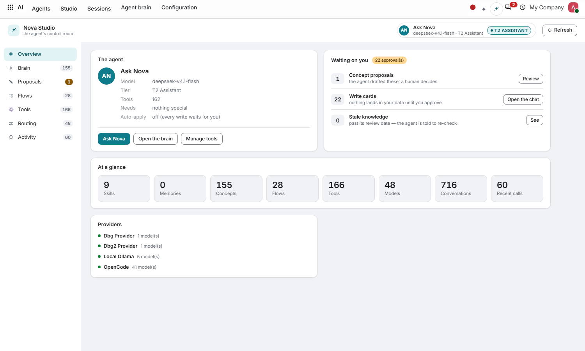
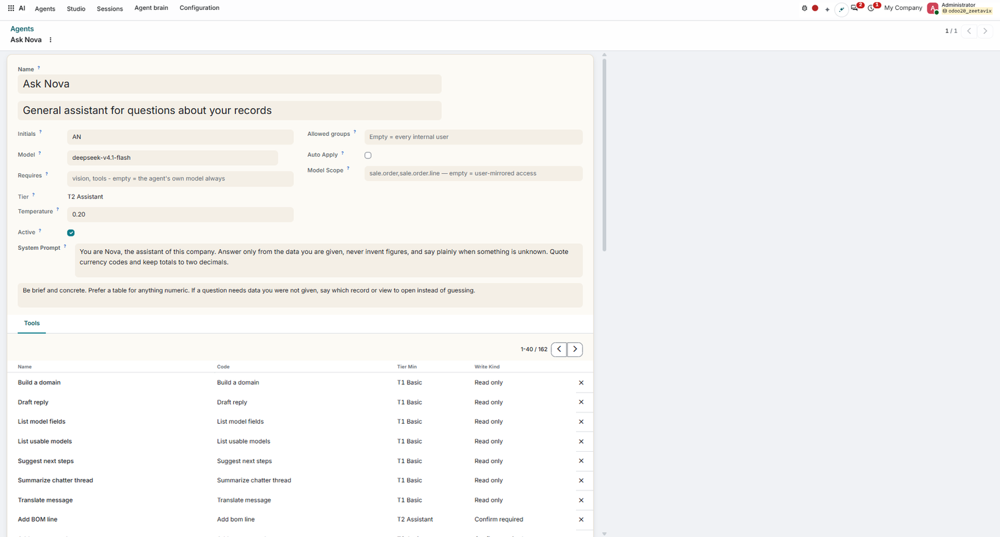
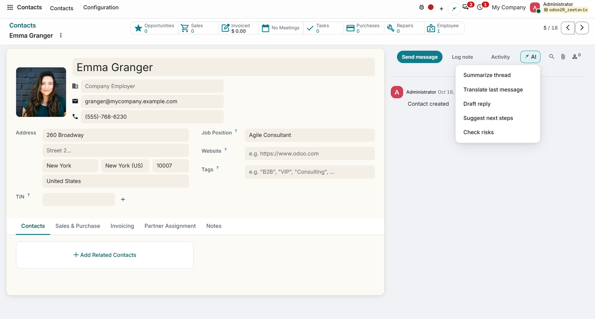
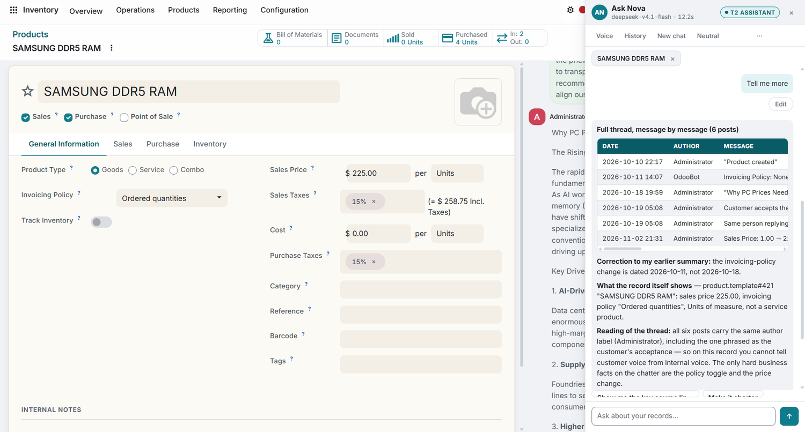
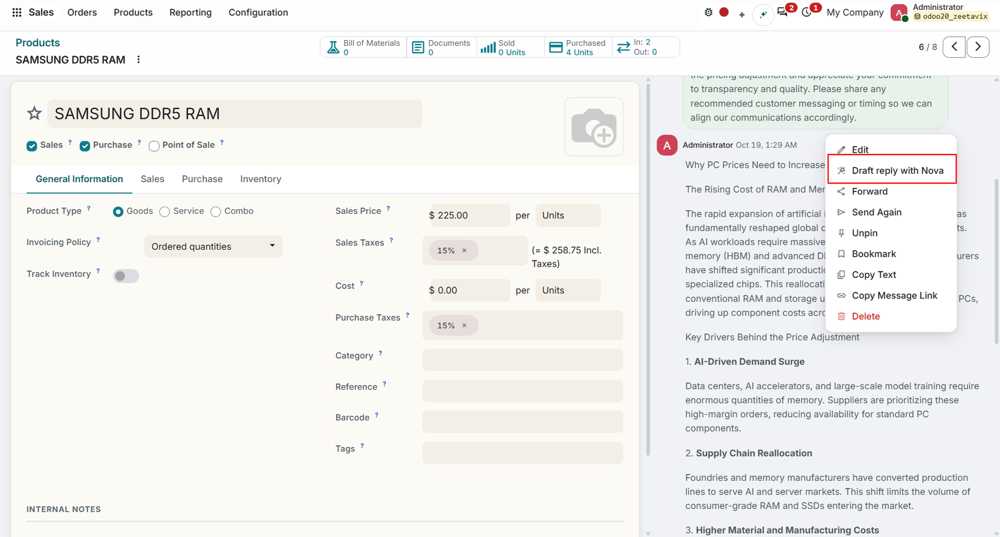
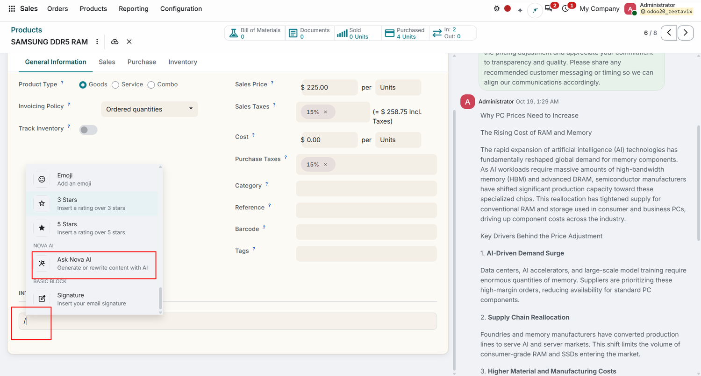
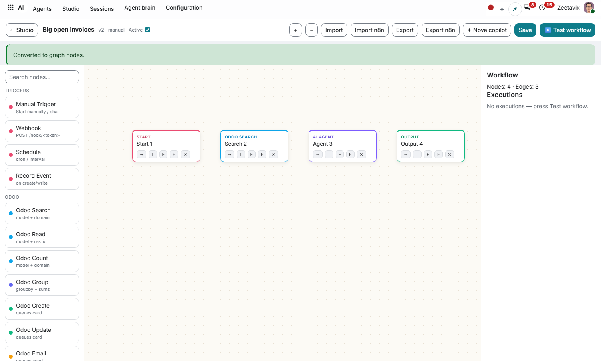
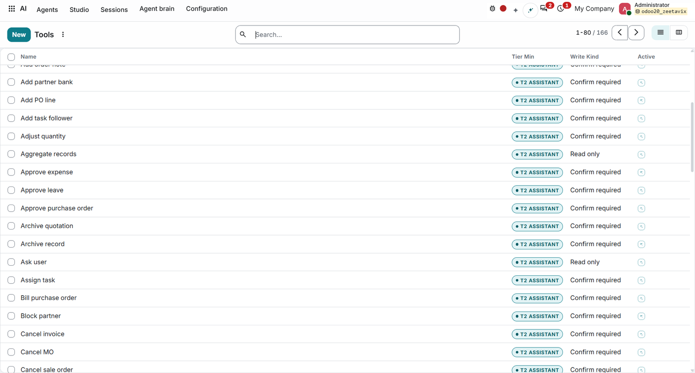
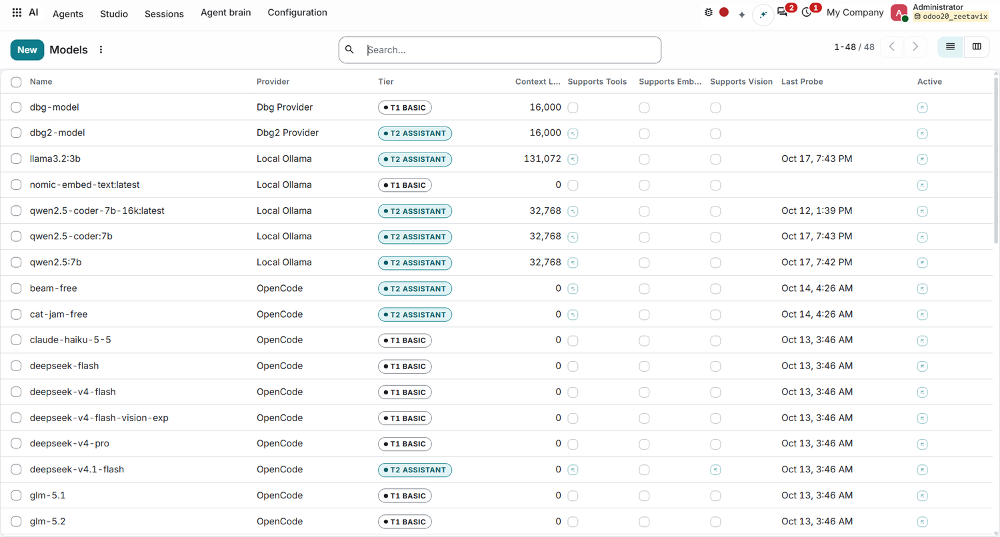

Your model · Your tools · Tiers that keep weak models useful

Studio shows one agent at a glance: model, tier, tools, proposals waiting on a human, write cards that never land without approval, and knowledge past its review date. Nothing auto-applies unless you explicitly allow it.

Every record's chatter gains an AI menu: summarize the thread, translate the last message, draft a reply, suggest next steps, check risks. The agent answers only from your data — never invents figures, says plainly when something is unknown.

Pin a record and Ask Nova reconstructs the full story: every post dated and attributed, corrections tracked, the record's own values quoted back. Customer voice separated from internal voice — on the record itself.

Every chatter post carries a message menu, and in it: Draft reply with Nova. The draft is written from the post you are answering plus the records behind it — quote the thread, answer the customer, stay in flow.

Type / in any rich-text field and Ask Nova AI
generates or rewrites content in place — product stories,
customer messages, internal notes. The finished article lands
in the chatter, quoted against the thread it came from.

Twenty-nine ready-made flows ship in the library — chasing overdue invoices, stockout reports, stale drafts. Run them as classic steps or convert to a node graph: triggers, Odoo operations and an agent step wired together, with n8n import/export both ways.

Read-only tools run free at T1; anything that writes needs a confirm card at T2, auto-apply only at T3 with a large model and an admin toggle — behind a full audit log. Seventy drawer prompts ship ready-made: replenishment, collection radar, meeting prep, shortage watch.

Forty-eight models across local Ollama and hosted endpoints, each probed and badged: T1 runs deterministic micro-tools with confirm cards, T2 gets the full tool loop. Swap models per agent without touching a single flow.

Any model
Local (Ollama, LM Studio, llama.cpp, vLLM) or hosted
OpenAI-compatible endpoints. No Odoo-hosted model, no IAP.
Capability tiers
T1 deterministic micro-tools with confirm cards; T2 full tool
loop; T3 auto-apply only with a large model + admin toggle,
behind a full audit log.
Your data stays yours
Knowledge versioning, per-record guards and chatter actions
that degrade gracefully. No Enterprise code, no forks.
Version: 20.0.1.22.0
License: OPL-1
Price: Free
Dependencies: nova_backend_theme, mail
Built for: Odoo 20 Community.
Install: install Nova Backend Theme first,
then Nova AI; update the apps list if it is not visible.
After install: Settings › Nova AI to
connect a provider, pick a model, activate the agent.
support@zeetavix.com · github.com/zeetavix/nova-ai